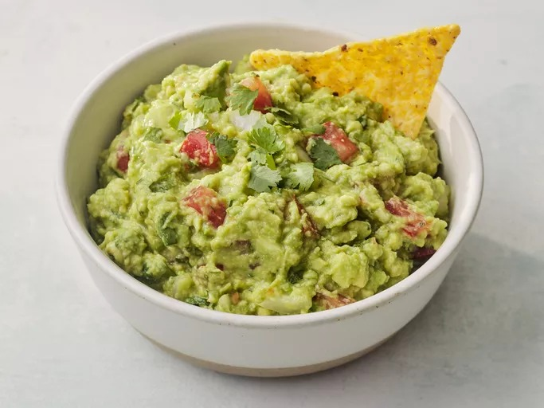

Home
Guacamole

Description
Ingredients
- Avocados
- Lime
- Tomato
- Onion
- Garlic clove
- Salt
Steps
- ash 3 ripe avocados. Mix in juice of 1 lime, 1 diced tomato, ¼ cup chopped red onion, 1 minced garlic clove, and salt. Add chopped cilantro and jalapeño to taste. Mix gently.
- Cover with plastic wrap directly on surface to avoid browning. Chill 30 minutes if desired.
- Serve with tortilla chips or on tacos, toast, or burgers. Customize with cumin, paprika, or diced mango for a twist.